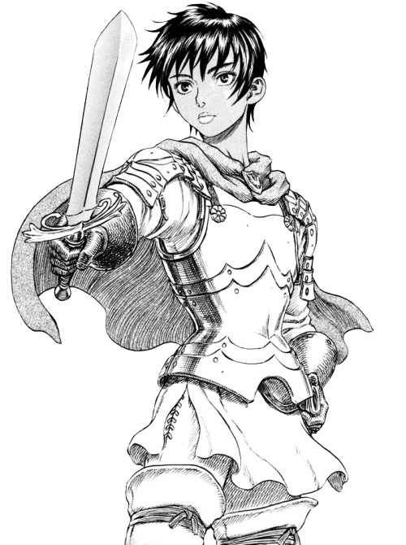

Casca
About Casca:
Casca's the former unit commander of the Band of the Hawk and currently a companion of Guts.

"If he's going to sacrifice everything for his dream,
if his dream is to fight and cut away his own path,
then I want to be his sword.”
-Casca